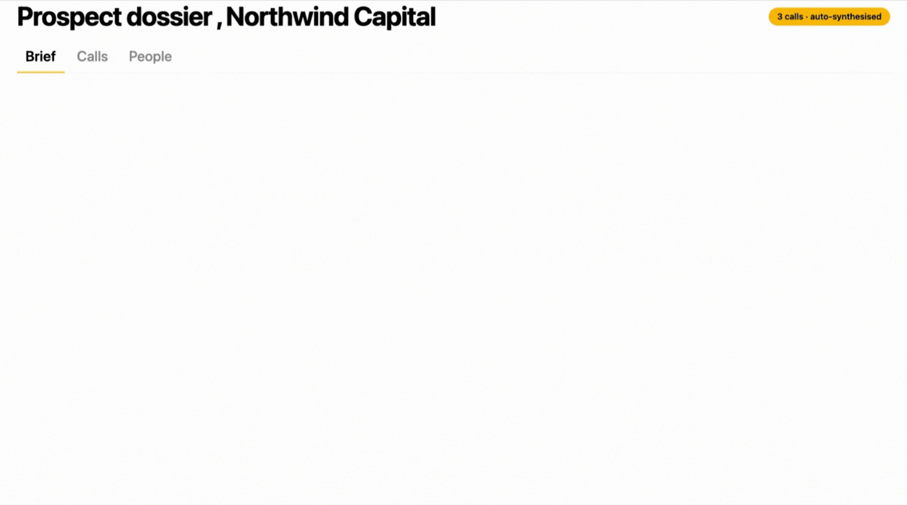
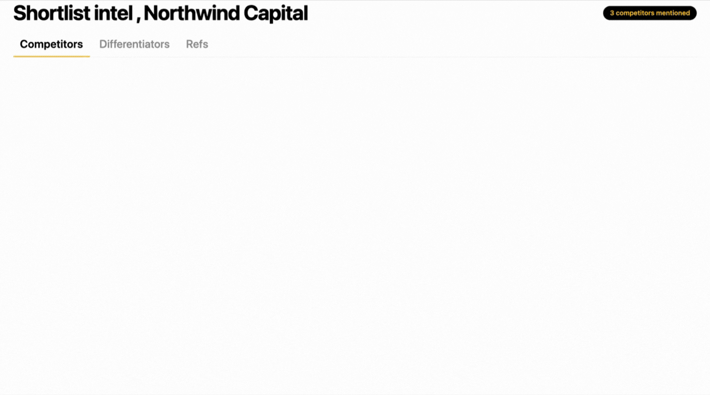
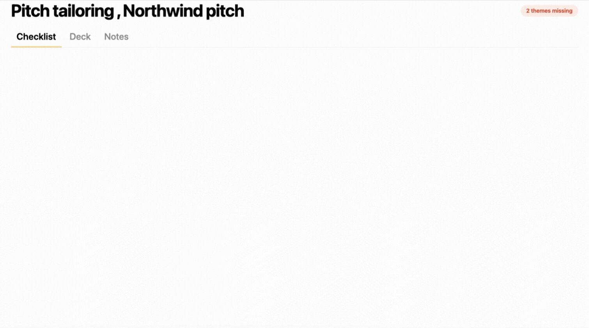

FOR · NEW BUSINESS / SALES
Pitch warmer. Grow existing clients deliberately.
Spend your prep time on the conversation, not the research - Kaizan surfaces the intel, the moments, and the people that matter.
The biggest impact of Kaizan is the time it gives us back. In meetings to be more present and engaged - and afterwards, a resource we can drop back into to make sure we’re doing the things we said we’d do.
Adam Hopkinson
Agency Owner
PASHN
Why new business leaders love Kaizan
The things New Business Leaders love.
01
Walk into every pitch already prepared.
Stakeholder intel, market context, competitor positioning, the prospect's recent moves - all surfaced before you walk in, so prep time goes on the pitch, not the research.
02
See where existing clients are ready for more.
New initiatives, leadership changes, unmet needs, frustrations with current scope - Kaizan surfaces the moments worth a growth conversation, so you stop relying on AMs to remember.
03
Know who actually decides.
Stakeholder maps surface the real influencers - not just the people in the meeting - so you spend your influence where it counts.
04
An AI Helper prospecting while you sleep.
Watching target accounts for leadership changes, funding rounds, and buying signals - so you wake up to a tee'd-up day, not a cold start.
How Kaizan helps
Pitch from a position of knowing - not guessing.
01
Prospect dossier
Every chemistry meeting and call distilled into a one-page brief: priorities, language, decision criteria, internal politics.

02
Shortlist intel
When prospects mention competitors, you see it - with the rebuttal slide ready before they ask the question.

03
Pitch tailoring
Pre-pitch checklist: have we addressed what they actually said matters? What’s missing from this deck?

FAQs
The questions new business leaders ask us.
Can I use it on prospects, or only on existing clients?
Both. Kaizan runs on prospects and on the existing portfolio, which is the point - your pitch motion and your growth motion run off the same intelligence layer, not two disconnected stacks.
Where does market and competitor intel come from, and how current is it?
Intel is pulled from the conversations Kaizan captures across your accounts and target list, plus the external sources it monitors - and refreshed automatically so what you walk into a pitch with is current, not a stale dossier.
Can I export a briefing pack for a pitch in one click?
One click. Kaizan compiles a pitch-ready briefing on demand: stakeholders, decision criteria, recent activity, competitor positioning and the talking points worth opening with - exported in the format your team uses for pre-reads.
Does it work alongside our prospecting tools (LinkedIn Sales Nav, Apollo, etc.)?
Kaizan sits alongside your prospecting stack, not on top of it. It reads from the same activity layer your team already works in and feeds the intelligence your sellers use to prepare, pitch and follow up.
Not quite you?